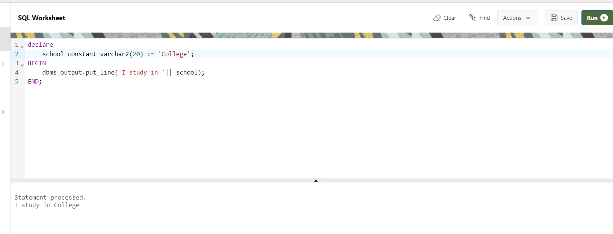

PL/SQL Constants
A constant is a value used in a PL/SQL block that remains unchanged throughout the program. It is a user-defined literal value. It can be declared and used instead of actual values.
Syntax
constant_name CONSTANT datatype := VALUE;
Example
DECLARE
school constant varchar2(20) := 'College';
BEGIN
dbms_output.put_line('I study in '|| school);
END;
